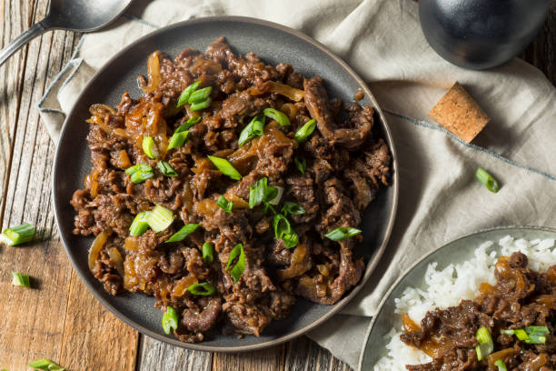

Beef Bulgogi

Description
A Korean dish consisting of grilled marinated beef and assorted vegetables, usually onions
Ingredients
- 1 1/2 pounds boneless rib eye steak
- 1/2 small pear, peeled and coarsely grated
- 1/4 cup reduced sodium soy sauce
- 2 tablespoons brown sugar
- 2 tablespoons toasted sesame oil
- 3 cloves garlic, minced
- 1 tablespoon freshly grated ginger
- 1 tablespoon gochujang, Korean red pepper paste
- 2 tablespoons vegetable oil, divided
- 2 green onions, thinly sliced
- 1 teaspoon toasted sesame seeds